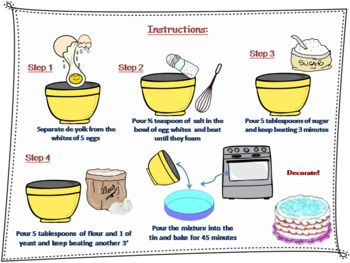

# Week 1 ## Chapter 6 - A First Look at Classes, Java Basics Overview, Introduction to Data Structures and Algorithms. --- ### Weekly Structure: - Lecture with Coding Demo: 60 minutes. - Quiz/Knowledge Check: 15-20 minutes. - Short Break: 5-10 minutes. - Labs: 60-90 minutes. - Group Discussions/Peer Reviews: 20-30 minutes. - Recap and Q&A Session: 15-20 minutes. --- ### Objectives By the end of this class, you should be able to answer the following questions: 1. What are the key principles of Object-Oriented Programming (OOP)? 2. How do classes and objects work in Java? 3. What are instance fields and methods, and how do they differ from each other? 4. What is the purpose of a constructor in a class? 5. How can you overload methods and constructors in Java? --- ### What is Object-Oriented Programming (OOP)? - **Object-Oriented Programming (OOP)** is a paradigm that organizes software design around data, or objects, rather than functions and logic. - **Key Principles of OOP**: - *Encapsulation*: Bundling the data (fields) and methods (functions) that operate on the data into a single unit or class. - *Inheritance*: Mechanism where one class inherits fields and methods from another, promoting code reuse. - *Polymorphism*: Ability of different classes to be treated as instances of the same class through inheritance, with each class potentially having different implementations of a method. - *Abstraction*: Hiding the complex implementation details and exposing only the essential features of the object. --- ### Why is OOP Important? - *Real-World Modeling*: OOP allows you to model real-world entities in code, making software more intuitive and easier to maintain. - *Modularity*: Code is easier to manage and reuse when it’s broken down into modular classes. - *Maintainability*: OOP principles make it easier to manage and modify existing code without affecting other parts of the system. --- ### Java as an OOP Language Java is inherently object-oriented, making it ideal for modeling real-world entities. - **Core Java Concepts**: - *Classes*: The blueprint for creating objects that define the properties and behavior of objects. - *Objects*: Instances of classes that hold data and behavior. - *Methods*: A function defined within a class that describes the behaviors of the objects. - *Fields*: Variables within a class that hold data specific to an object. - Example: ```java public class Dog { String name; int age; void bark() { System.out.println(name + " is barking"); } } ``` --- ### **6.1 Objects and Classes** - *Objects* are instances of classes, representing entities with attributes (fields) and behaviors (methods). - *Classes* are blueprints for creating objects. They define what an object’s data and behavior will be. Think of a class as a blueprint for a house. The house (object) built from this blueprint will have specific attributes like the number of rooms and color. Just like you can build multiple houses from one blueprint, you can create multiple objects from one class. --- ### **6.2 Writing a Simple Class** *Defining a Class*: Use the `class` keyword followed by the class name. Example: ```java public class Rectangle { double length; double width; void setDimensions(double len, double wid) { length = len; width = wid; } double calculateArea() { return length * width; } } ``` The `Rectangle` class defines two instance fields, `length` and `width`, and two methods, `setDimensions()` and `calculateArea()`, to manage the data. --- ### **6.3 Instance Fields and Methods** - *Instance Fields*: These are variables declared inside a class but outside any methods. Each object has its own copy of these fields. - *Instance Methods*: Functions that operate on the instance fields of the class. ```java public class Circle { double radius; // instance field double getArea() { // instance method return Math.PI * radius * radius; } } ``` --- ### **6.4 Constructors** - A constructor is a special method used to initialize objects. - To set up the initial state of the object. ```java public class Rectangle { double length; double width; // Constructor public Rectangle(double len, double wid) { length = len; width = wid; } double calculateArea() { return length * width; } } ``` The constructor `Rectangle(double len, double wid)` initializes the `length` and `width` fields when a new `Rectangle` object is created. If no constructor is defined, Java provides a default one. --- ### **6.5 Passing Objects as Arguments** Passing objects to methods allows the method to modify the object’s state or use its data. ```java public void enlargeRectangle(Rectangle rect, double factor) { rect.length *= factor; rect.width *= factor; } ``` Here, the `enlargeRectangle` method modifies the `length` and `width` fields of the `Rectangle` object passed to it. --- ### **6.6 Overloading Methods and Constructors** Overloading allows multiple methods or constructors with the same name but different parameters. ```java public void setDimensions(double len) { length = len; width = len; // A square } public void setDimensions(double len, double wid) { length = len; width = wid; } ``` Overloading the `setDimensions` method allows different ways to set the dimensions of the `Rectangle` object. --- ### **6.7 Scope of Instance Fields** - *Local Variables*: Declared within methods, only accessible within that method. - *Instance Variables*: Declared in the class but outside methods, accessible by all methods in the class. ```java public class Rectangle { double length; // instance variable public void setDimensions(double length) { // local variable this.length = length; // using 'this' to distinguish between the local and instance variable } } ``` --- ### **6.8 Packages and import Statements** - *Packages* group related classes together. - *import Statement*: Used to include other classes from packages. ```java import java.util.Scanner; ``` `import java.util.Scanner;` allows the use of the `Scanner` class in the code, which is part of the `java.util` package. --- ### **6.9 Focus on Object-Oriented Design: Finding the Classes and Their Responsibilities** When designing software, it’s important to identify the classes needed and what responsibilities each class should have. *Case Study*: Imagine you're designing a software system for a restaurant. Here’s how you might think about classes and responsibilities: **Classes**: - *Chef*: Responsible for cooking food. - *Waiter*: Responsible for taking orders from customers and serving food. - *Customer*: Represents the person dining at the restaurant. **Responsibilities**: - *Chef*: Cooks dishes based on orders received. - *Waiter*: Takes orders, delivers them to the kitchen, and serves the prepared dishes. - *Customer*: Places orders and consumes the food. In this example, the Chef doesn’t worry about taking orders or serving food—that's not their responsibility. The Waiter doesn’t cook the food, but they are responsible for ensuring the customer’s orders are properly communicated and delivered. The Customer simply interacts with the system by placing an order and expecting service. --- ### **Steps to Identify Classes and Responsibilities** #### **Understanding the Problem Domain** Before designing any system, it’s essential to have a deep understanding of the problem domain—the real-world environment where the software will be used. The problem domain provides context and helps ensure that the software addresses the right issues. A thorough grasp of the problem domain allows you to create software that models real-world situations accurately, leading to better functionality and maintainability. --- #### **Identifying Classes** A key step in object-oriented design is identifying the classes that represent the entities within your problem domain. A practical approach involves analyzing the nouns in your problem description. **Steps**: - *Extract Nouns*: Scan the problem domain description for nouns that represent potential classes. - *Evaluate Relevance*: Not all nouns will become classes. Focus on those that represent distinct entities with specific data and behaviors. - *Refine Your List*: Filter out any nouns that are too broad or too specific, and focus on those that will become the core classes in your design. Example: In a *library system*, nouns like `Book`, `Member`, `Checkout`, and `Return` could represent important classes. --- #### **Identifying Responsibilities** Once you have identified the classes, the next step is to determine the responsibilities of each class. This involves defining what data each class will manage and what actions it will perform. **Steps**: - *Identify Core Functions*: Determine the key functions that each class should perform. For instance, a `Book` class in a library system might manage title, author, and publication date. - *Assign Methods*: Based on these functions, assign methods to each class that will allow it to manage its responsibilities effectively. - *Ensure Cohesion*: Responsibilities within a class should be closely related, ensuring that the class has high cohesion. Example, In the library system, the `Checkout` class might be responsible for recording when a book is checked out and when it’s due back, while the `Patron` class could manage personal information and borrowing history. --- #### **Class Collaboration** After identifying classes and assigning responsibilities, it’s crucial to consider how these classes will interact. Collaboration often involves one class using the methods of another to fulfill its responsibilities. Example, The `Checkout` class might collaborate with the `Book` and `Patron` classes to record and track which books are checked out by which patrons. --- ## **Summary** - **Key Takeaways**: - Java is a powerful OOP language that models real-world entities. - Understanding classes and objects is foundational to mastering Java. - Constructors are critical for object initialization, and method/constructor overloading provides flexibility. - Effective use of classes and objects leads to better software design and maintainability. In software design, identifying entities helps in structuring the system in a way that mirrors the real world, making the system easier to understand, maintain, and extend. By accurately modeling entities and their relationships, developers can ensure that the software behaves in predictable and reliable ways, allowing for effective management of data and operations within the system. --- # Introduction to Data Structures and Algorithms --- ## What is a Data Structure? - A way of organizing and storing data so that it can be used efficiently. - Think of it as a system or method to keep track of information so that it's easy to find, update, or delete when needed. - Think of it as a blueprint or a framework that allows data to be stored in a way that is both efficient and easy to work with. --- ### Real-Life Example: The Bookshelf Imagine you have a bookshelf full of books. How you organize those books on the shelf is like a data structure: <div style="display: flex; align-items: flex-start;"> <div style="flex: 1; padding-right: 2pt;"> <ul style="font-size: 24pt;"> <li> Alphabetical Order: You could arrange your books in alphabetical order by the author's last name. This way, if you know the author, you can quickly find any book. </li> <li> By Genre: Maybe you decide to organize your books by genre—mystery, science fiction, fantasy, etc. This makes it easy to find a book if you know what kind of story you want to read. </li> <li> Chronological Order: Another option could be to arrange the books by the date you bought them, making it easy to remember when you got a certain book. </li> </ul> </div> <div style="flex: 0 600px;"> </div> </div> Each of these methods is like a different data structure because they all have different ways of organizing the same data (your books), and each method is more useful in different situations. --- ### Why is this Important? Data structures are essential in computer science because they help in storing data in ways that make it easier to use. For example: - *Fast Searching*: If you organize data well, you can find what you need quickly. Imagine trying to find a book on a shelf where all the books are randomly placed—that would take a lot of time! - *Efficient Storage*: Some data structures help in storing data in a way that uses less memory, which is crucial when dealing with large amounts of data. - *Easy Updates*: Just like how you can easily add or remove a book from a well-organized bookshelf, data structures help in efficiently adding, removing, or updating information. --- ## What is an Algorithm? - An algorithm is a step-by-step procedure or set of rules to solve a specific problem or perform a task. - Think of it as a recipe or a series of instructions that you follow to achieve a desired outcome. - Algorithms are the backbone of computer programming; they tell the computer how to process data and make decisions. --- ### Real-Life Example: Imagine you want to bake a cake. The recipe you follow is like an algorithm: <div style="display: flex; align-items: flex-start;"> <div style="flex: 1; padding-right: 2pt;"> <ul style="font-size: 24pt;"> <li> Gather Ingredients: You need flour, sugar, eggs, and other items before you can start. </li> <li> Follow Steps: The recipe gives you specific steps to combine the ingredients, bake the mixture, and eventually produce a cake. </li> <li> Desired Outcome: If you follow the recipe correctly, you end up with a delicious cake. </li> </ul> </div> <div style="flex: 0 400px;">  </div> </div> Similarly, in programming, an algorithm is a set of instructions that guides the computer in solving a problem or performing a task. Each step in the algorithm brings you closer to the solution, just like each step in a recipe brings you closer to the finished dish. --- ### Why is this Important? Algorithms are crucial in computer science because they form the logic behind how software and programs operate. For example: - *Efficiency*: The efficiency of an algorithm determines how quickly it can solve a problem or complete a task. - *Problem Solving*: Algorithms provide systematic ways to approach complex problems, breaking them down into manageable steps. - *Automation*: By defining clear instructions through algorithms, we can automate tasks that would be tedious or impossible for humans to do manually. --- # Knowledge Check --- ### Which of the following is NOT a key principle of Object-Oriented Programming (OOP)? - a) Encapsulation - b) Inheritance - c) Polymorphism - d) Compilation --- ### Answer <span class="fragment">d) Compilation</span> --- ### What does encapsulation in OOP refer to? - a) Inheriting properties from another class - b) Hiding the complex implementation details - c) Bundling data and methods that operate on that data into a single unit or class - d) Allowing objects to take many forms --- ### Answer <span class="fragment">c) Bundling data and methods that operate on that data into a single unit or class</span> --- ### In Java, what is the purpose of a constructor in a class? - a) To compile the class - b) To initialize objects - c) To manage memory allocation - d) To define methods in the class --- ### Answer <span class="fragment">b) To initialize objects</span> --- ### Which of the following best describes a class in Java? - a) A type of loop structure - b) A blueprint for creating objects - c) A function that runs when an object is created - d) A data type that holds a sequence of characters --- ### Answer <span class="fragment">b) A blueprint for creating objects</span> --- ### True or False: Overloading allows multiple methods in a class to have the same name but different parameters. <span class="fragment">True</span> --- ### What is the output of the following code snippet? ```java public class Dog { String name = "Buddy"; int age = 5; void bark() { System.out.println(name + " is barking"); } } Dog myDog = new Dog(); myDog.bark(); ``` - a) Buddy is barking - b) The code will not compile - c) The code will throw a runtime exception - d) barking <span class="fragment">a) Buddy is barking</span> --- ### What are instance fields in Java? - a) Variables that are shared across all instances of a class - b) Variables declared within a method - c) Variables declared inside a class but outside any method - d) Variables that only exist during the execution of a method <span class="fragment">c) Variables declared inside a class but outside any method</span> --- ### What does the following code snippet demonstrate? ```java public void setDimensions(double len) { length = len; width = len; } public void setDimensions(double len, double wid) { length = len; width = wid; } ``` - a) Inheritance - b) Polymorphism - c) Method Overloading - d) Encapsulation <span class="fragment">c) Method Overloading</span> --- ### True or False: A class can have multiple constructors, as long as each constructor has a different signature. <span class="fragment">True</span> --- ### In which scenario would you use the 'this' keyword in Java? - a) To refer to the current object within an instance method or a constructor - b) To call a method of another class - c) To initialize a static field - d) To terminate a loop <span class="fragment">a) To refer to the current object within an instance method or a constructor</span> --- ### Question 12 **What is the role of a package in Java?** - a) To compile Java classes - b) To group related classes together - c) To convert Java code into bytecode - d) To define the entry point of the application <span class="fragment">b) To group related classes together</span> --- ### What happens if you don't define a constructor in a Java class? - a) The class will not compile - b) Java provides a default no-argument constructor - c) The class cannot be instantiated - d) The class will automatically inherit a constructor from the Object class <span class="fragment">b) Java provides a default no-argument constructor</span> --- ### Which of the following is an example of passing an object as an argument in Java? - a) `int sum(int a, int b)` - b) `void enlargeRectangle(Rectangle rect, double factor)` - c) `String getString()` - d) `boolean checkCondition(boolean flag)` <span class="fragment">b) `void enlargeRectangle(Rectangle rect, double factor)`</span> --- ### Which principle of OOP does the following statement demonstrate: "A single function can take many forms"? - a) Inheritance - b) Encapsulation - c) Polymorphism - d) Abstraction <span class="fragment">c) Polymorphism</span> --- ### True or False: The keyword 'import' is used to include other classes from packages. <span class="fragment">True</span> --- ### Which of the following best describes polymorphism in Java? - a) The ability of a class to inherit from multiple classes - b) The ability of different classes to be treated as instances of the same class through inheritance - c) The use of methods with the same name but different parameters within the same class - d) The ability of a class to define multiple constructors <span class="fragment">b) The ability of different classes to be treated as instances of the same class through inheritance</span> ---